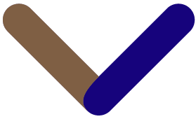

Depuis 1903, 104 Tours de France se sont déroulés ce qui représente plus de 430 000 km, soit plus que la distante Terre - Lune. Course contre la montre, maillot jaune, à poids, vert ou blanc, les cols mythiques de la Grande Boucle... Ces éléments constituent les ingrédients essentiels de cet évènement sportif, qui passionnera encore des dizaines de millions de spectateurs dans le monde entier pour l'édition 2018.
